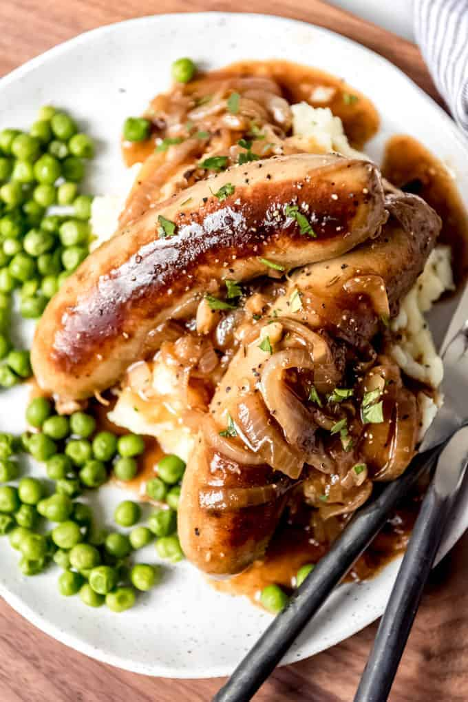
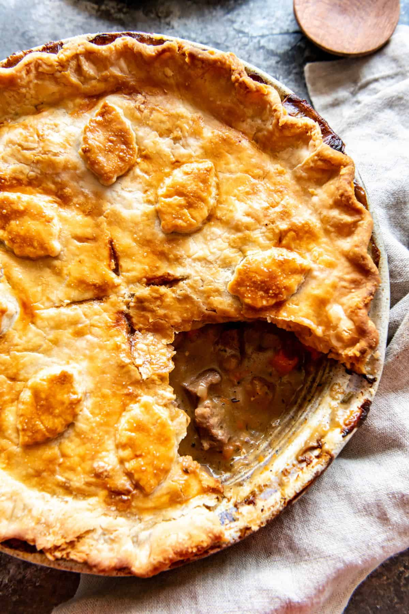
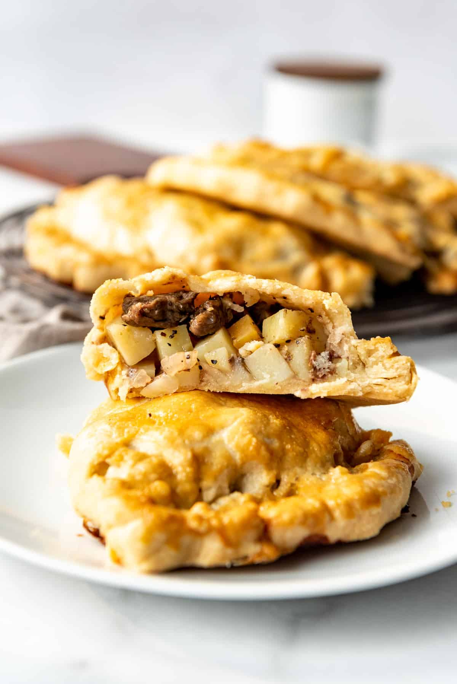
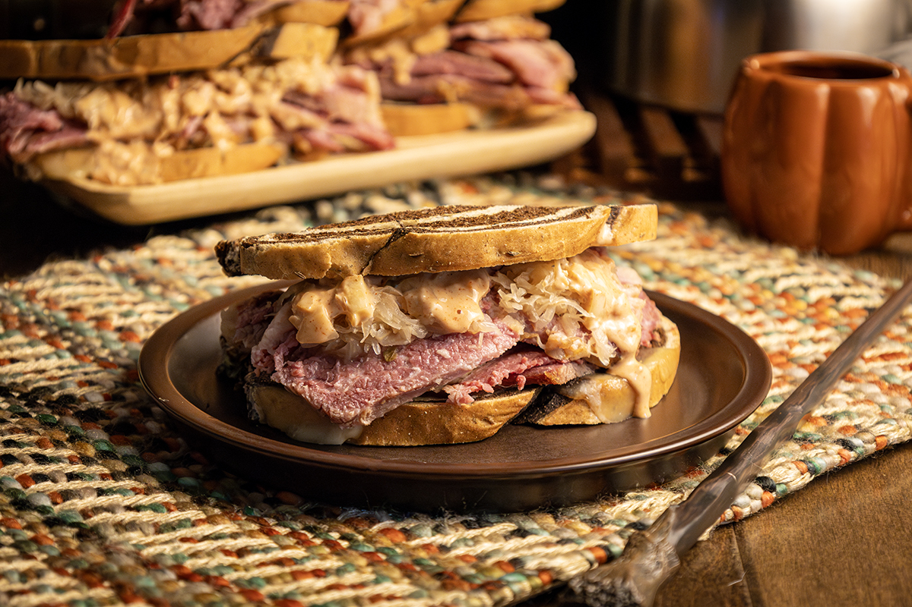
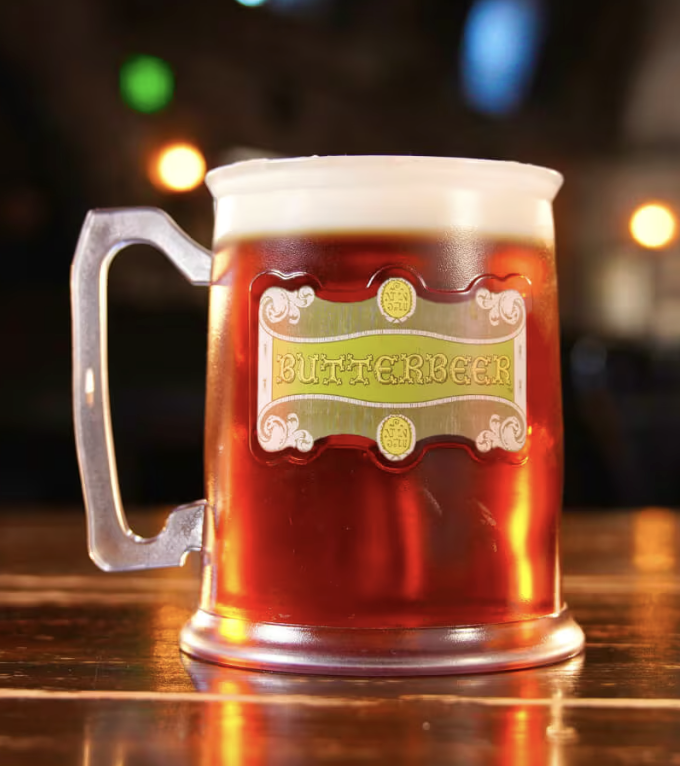
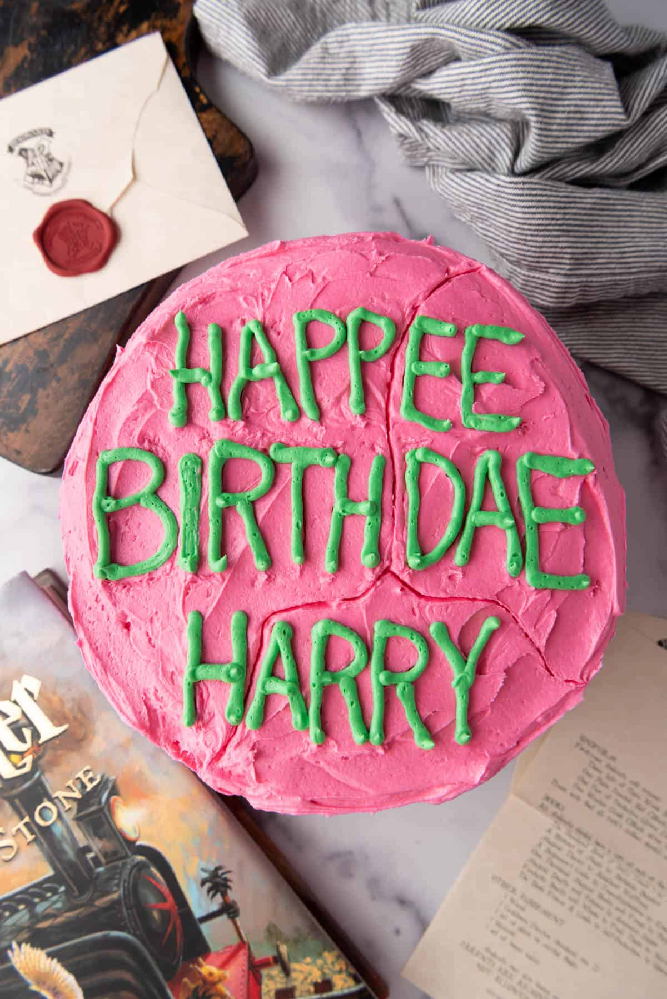
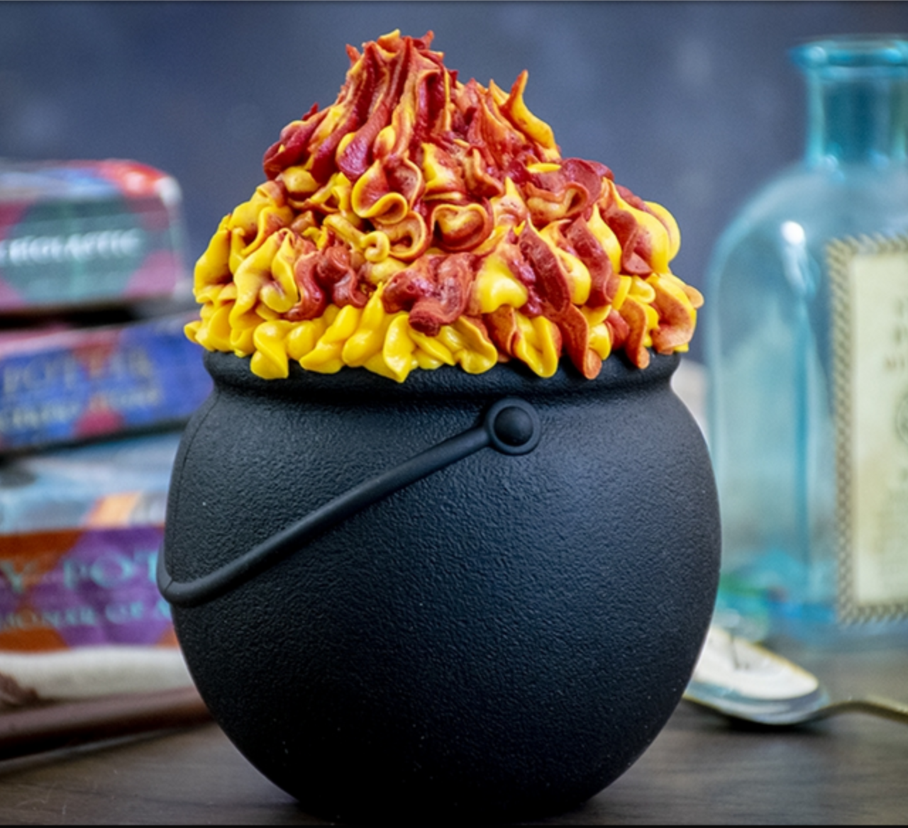
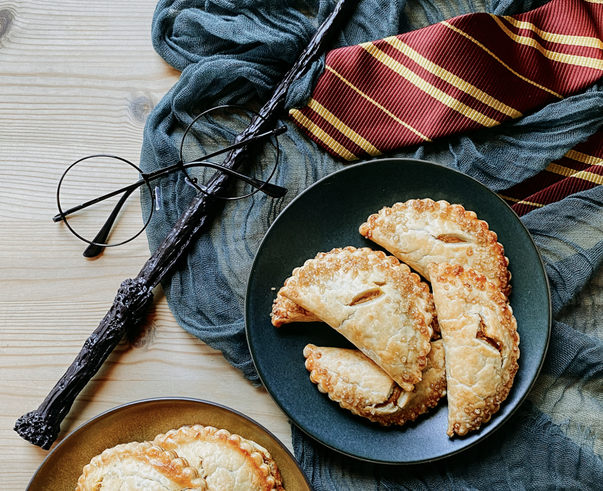

Lunch and Dinner Menu
Bangers and Mash (600 cal.) - 2 Galleons and 1 Sickle
Nothing beats a warm plate of bangers and mash after a long day of magical studies. Hearty and flavorful, this dish also provieds several opportunities to annoy your friends with bewitched peas.

Beef and Steak Pie (950 cal.) - 2 Galleons and 3 Sickles
This beef and steak pie is the closet thing you can get to Mom's cooking, unless your mom doesn't cook. Delight yourself in soft veggies and meat marinated in creamy gravy and wrapped in a delectable flaky shell.

Cornish Pasties (500 cal.) - 15 Sickles
Need to eat on the go? This handheld beef pie is the answer! Get it fast and eat it on the way to class!

Corned Beef Sandwiches (325 cal.) - 11 Sickles
If you're a fan of rye and sauerkraut, this is the dish for you! If you're a redhead on the Hogwart's Express, it might not be...

Butterbeer (300 cal.) - 5 Sickles
It's butterscotch cream soda. What more do I need to say?

Birthday Cake (600 cal.) - 14 Sickles
Happy Birthday! This is just a classic cake, but it's free if your name is Harry and you're turning 11!

Cauldron Cake (650 cal.) - 12 Sickles
A soft brownie topped with fiery frosting. Normally, we'd tell you not to eat random things in cauldrons, but this is an exception!

Pumpkin Pasties (400 cal.) - 6 Sickles
Pumpkin pie on the go! If you were late enough to get a cornish pasty, you're definitelly late enough for one of these fall-flavored beauties.
